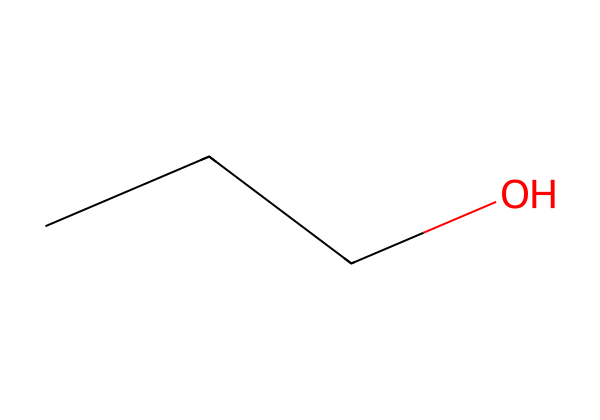
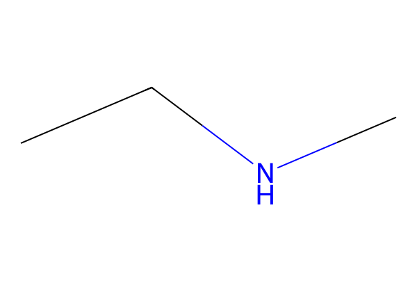
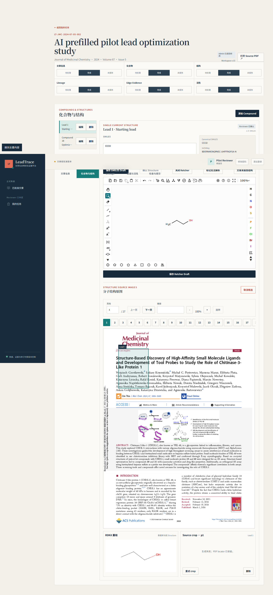
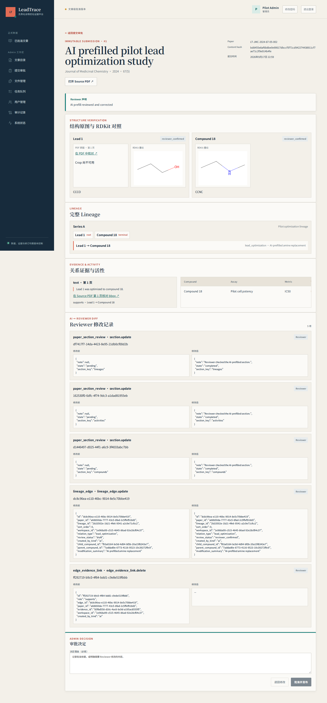

LT
LeadTrace
先导化合物优化证据平台
Research Platform · Advisor Briefing
把药物化学论文，变成可计算的研发知识
面向先导优化研究的 Human-in-the-loop 科学数据生产平台：结构化、可追溯、可审核、AI-ready。
20 篇隔离试点论文
6 类 = 0数据完整性异常
766 项前后端自动化测试通过
面向先导优化研究的 Human-in-the-loop 科学数据生产平台：结构化、可追溯、可审核、AI-ready。
可以很快，但谁确认？依据在哪？如何纠错？版本是否稳定？
书目信息、Source PDF、内容身份
结构身份 + 来源图

结构身份 + 来源图

parent → child
修改摘要 · 审核状态
页码、区域、原文、图注；支持 / 反驳 / 上下文
Assay、Metric、Operator、Value、Unit、Context
不可变快照
内容哈希
原始文件只读；SHA-256 与逻辑定位绑定。
SOURCE OF TRUTH解析标题、DOI、卷期、页数和来源身份。
CATALOG只进入空白、未触碰的 Workspace。
OPTIONAL画结构、建谱系、连证据、录活性。
HUMAN GATE生成不可变 snapshot 与 content hash。
IMMUTABLE批准，或带理由退回并继续修订。
GOVERNANCE文献库只读取批准后的固定版本。
REUSABLE20 篇试点中的强制竞争场景：过期 AI apply 插入 0 条科学记录，Reviewer 的不可变修改事件完整保留。

原始 PDF 与页码上下文始终在场，不脱离来源判断。
Ketcher 编辑结构，Cytoscape 呈现优化谱系与 parent/child 关系。
Evidence 绑定 Edge，提交前逐区段完成或显式标记未报道。
Source PDF、页码、归一化区域、原文与 crop provenance
before / after、actor、实体、时间与 Workspace version
提交时冻结全 Paper snapshot，并绑定 content hash
审计链、加密备份、独立恢复与权限矩阵共同验收

Visitor · Reviewer · Admin
HTTPS、静态前端、API 代理
权限、科学服务、事务边界
裁图与 AI prefill 任务
唯一业务数据权威
可由数据库任务重建
内容寻址、完整性校验
原始语料不被改写
首次创建 20 篇；重复 apply 创建 0、保持 20，且源 PDF 字节与哈希变化均为 0。
来源、发布指针、快照、资产、审计链等全部为零。
备份、恢复、工作流、权限、HTTPS、Worker、Source 等全部通过。
在 3600 秒 RTO 目标下完成恢复与 HTTP 验证。
专用 PostgreSQL 测试库；另 1 项可选真实 broker 用例跳过。
18 个文件；TypeScript、生产构建与 Chromium E2E 同步通过。
覆盖人工退回重提，以及 AI 预填后人工修正并批准。
让专家判断、AI 结果与原始证据进入同一版本化闭环。
连接相同骨架、靶点、修饰模式与活性趋势，形成可查询谱系。
为训练集、检索增强、解释性预测和候选设计提供高质量上下文。
当科学 AI 进入真实研发流程，如何同时获得速度、可纠错性、可解释性与责任边界？LeadTrace 为这个问题提供了一个可运行的系统原型。
LeadTrace 不是把 PDF 搬进数据库，而是把散落的药化判断，变成能被验证、继承和计算的知识资产。